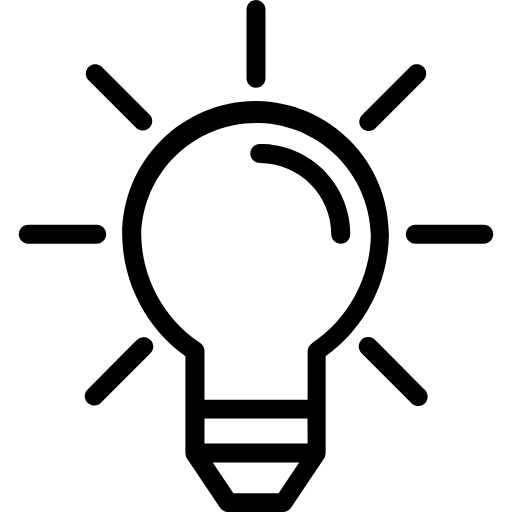
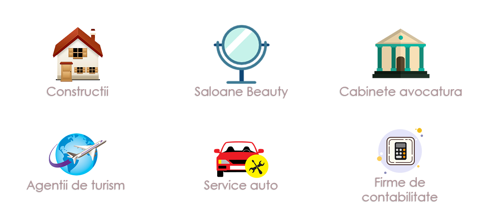

“Hai să facem cunoștință!” – spune prin imagine logo-ul creat
Ce putem realiza?
- Logo-uri
- Bannere publicitare
- Invitatii de nunta
- Meniuri restaurante
- Carti de vizita
- Stickere masina autocolante
- Mail-uri publicitare
<div class="col-lg-VREAU-SITE">
<p>1. Creăm un logo ce face brand-ul ușor de recunoscut</p>
<p>2. Logo-ul transmite USP-ul brand-ului</p>
<p>3. Creăm un logo ce se declină ușor și frumos</p>
<p>4. Logo-ul creat asigură branding-ul pe termen lung</p>
<p>5. Un logo de brand vorbeşte pe limba consumatorului</p>
</div>

- Calitate deosebita si timpi de realizare redusi precum si un numar mare de optiuni din care sa alegeti varianta finala de design logo, carti de vizita, foi cu antet, mape de prezentare, bannere.
- O arhitectura eficienta a informatiei iti permite sa prezinti mesajul potrivit, la momentul potrivit, in locul potrivit. Cu cat utilizatorilor le este mai usor sa gaseasca informatia de care au nevoie in pagina ta web, cu atat procesul de conversie va fi mai rapid.
- 
- Design-ul grafic se ocupa de tot ceea ce inseamna aspectul site-ului tau, de la aspectul vizual si pana la elemente de branding, cum este logo-ul. O parte stiinta, o parte arta, o parte talent si cunostinte tehnice, am invatat de-a lungul timpului sa le combinam intr-un mod inventiv, pentru a-ti oferi o pagina web de nota 10.
Site-uri tematice
Design-ul grafic pentru website este ca sarea in bucate!
Iti oferim mentenanta site
- Treaba noastra nu se termina dupa ce iti livram site-ul. Vrem sa ne asiguram ca acesta este la cel mai inalt nivel de performanta asa ca vom monitoriza reactiile utilizatorilor tai, numarul de vizite si conversii etc. si vom aduce imbunatatiri acolo unde este posibil.